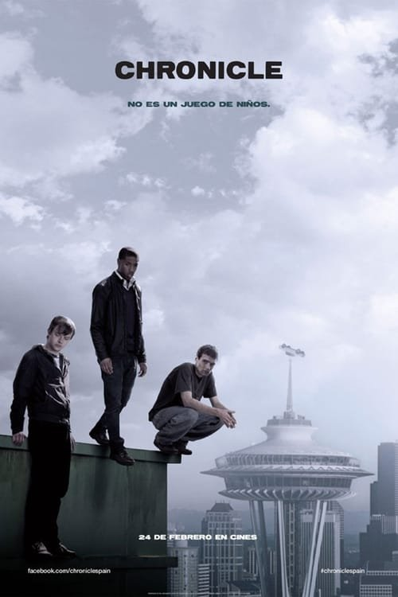

Chronicle (2012)
Sinopsis Rápida
Tres amigos de instituto descubren un poder misterioso que los transforma, pero la creciente influencia corrompe su amistad y amenaza con destruir todo a su paso. ¿Hasta dónde llegará su poder?
Sinopsis Detallada
Chronicle narra la historia de Andrew, Matt y Steve, tres chicos marginados que encuentran un objeto extraño que les otorga superpoderes. Inicialmente, usan sus habilidades para bromas y travesuras, pero el poder comienza a afectar su psiquis y sus relaciones. La película explora temas de poder, corrupción, y la naturaleza humana a través de una perspectiva única y en primera persona. El desarrollo de la historia es oscuro, lleno de suspense y con un final impactante.
¿Por qué tenés que verla?
- Una perspectiva única en primera persona te coloca en el centro de la acción.
- La innovadora técnica de cámara en mano crea una experiencia inmersiva y visceral.
- Chronicle influyó en la representación de superhéroes en el cine, mostrando un lado más oscuro y complejo.
- Explora los peligros del poder absoluto y la corrupción de la amistad.
Idea Extra
Análisis de la cinematografía de Chronicle y su impacto en la estética de las películas de superhéroes posteriores.
{{CONTENIDO_RELACIONADO}}